I mainly rely on my two feet and bus during the three-day-stay in Dunhuang.
Therefore Dido and I both got plenty of rest during the stay.
I packed up my belongings and bought some more snacks as supply.
Since some of the snacks are dried fruit, I need to store it properly or it might be rotten before I eat it.
Now I am a little confused about the time zone. The time on my watch is still in Taiwan Time, which is GMT +8.
However, at the border of Xinjiang and Gansu, I should apply GMT +7 or +6.
Hum.. feeling lazy to adjust this thing. The GMT +8 stays on my watch.
It feels good to ride on Dido again. It feels just like a beginning of another journey.
Today I am going to head north. The goal for today is Liuyuan, which is about 130 kilometer outside Dunhuang.
After one night stay in Liuyuan, I will be in the territory of Xinjiang tomorrow.
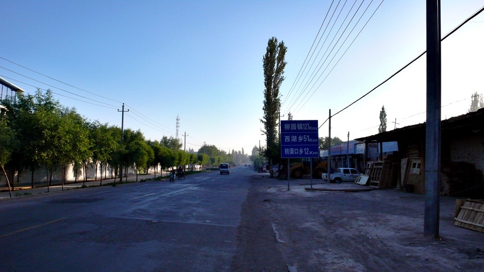
The road that leads me today, the national highway no. 215,
appears to be a perfect straight line heading northeast by north,on both the paper map and the Google map.
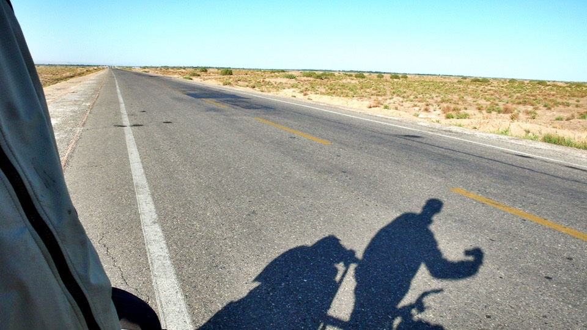
It is cool to get off early, but the temperature is a little bit low in the morning.
Even though the sun shows his face, the temperature is still only around 20 degree Celsius.
Even with my gloves, my fingers outside the glove are still as cold as ice. My feet are also freezing inside the sox and shoes.
However, it is easy to warm them up. Kick in the pedals, and my body start to warm up after a while on the road.
I did not have my breakfast in Dunhuang. I was planning to eat in town, but failed to find a shop there.
After I am confident that there is only desert ahead, I take out the bum and start biting it.
I finished all the bum at once, and drank a whole bottle of water.
Totally stuffed. I am a bit too greedy this time. Those foods are enough for two meals but I finished in one.
There is no mystery lies in this perfectly straight road. By the time I am on it,
it appears to be a normal tar road across the desert, and it happens to be very straight.
Humming some tunes, I advance in the cool air.
Thanks to the fact that I departs earlier in the year, I avoids the torture of oven like heat in desert during July and August.
The national highway no. 215 connects Dunhuang and Liuyuan. Almost no one habitats in between.
Besides a small village which is 50 kilometer outside Dunhuang,
which will supply me some food and shelter, the rest of the road is completely desolate.
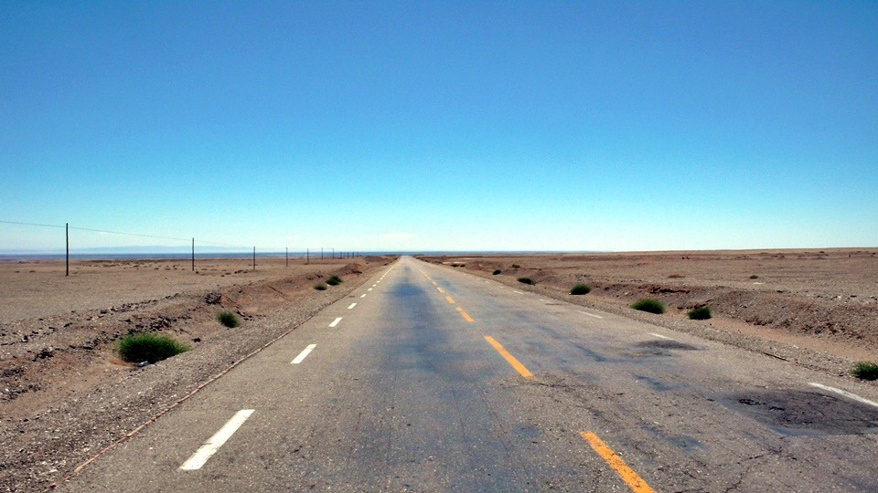
Since I left early in the day, and the easy road in the first half of the road, I arrived at this village at half past ten AM.
It is a little bit too early for lunch, but I do not know what to do if I don't have a meal here.
I ordered a dish of stir-fry noodle in a restaurant.
Side with a dish of cauliflower since I also want some vege.
Before the dish get to my table, I walk around to see what they have in this small town.
I taste some crunchy grains at this place. Those hard grains like green beans and corns become so crunchy after being baked.
It feels like I am not having grains but crackers.
I can chew these stuff without hurting my teeth. However the downside is that it comes with no spice,
and is a bit tasteless. In the end I bought nothing from here.
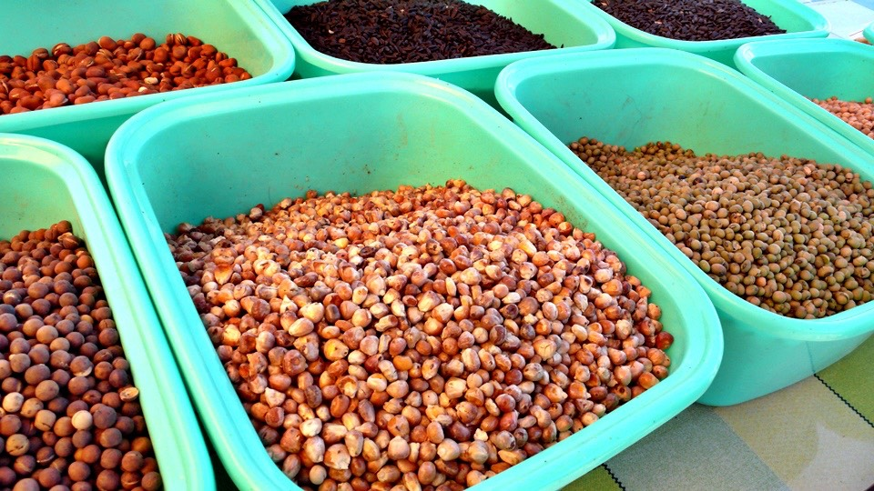
Back to the restaurant. The delicious food is on the table. Stir-fry noodle seems good and delicious.
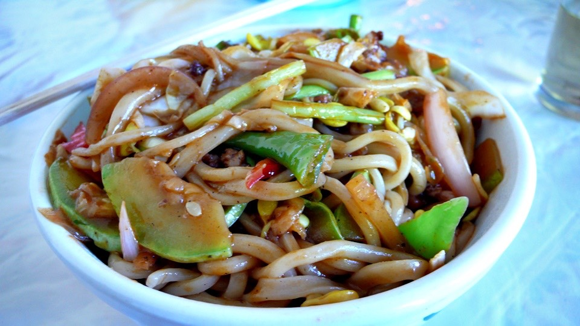
But the cauliflower is nothing like what I have in mind. I was planning to get some mild vegetables,
but this dish of cauliflower comes with all the spicy oils, soy sauces and chili pepper.
I am really amazed that a simple dish of cauliflower has this kind of potential.
This is totally salty. With more than ten cup of tea, I finished all the food.
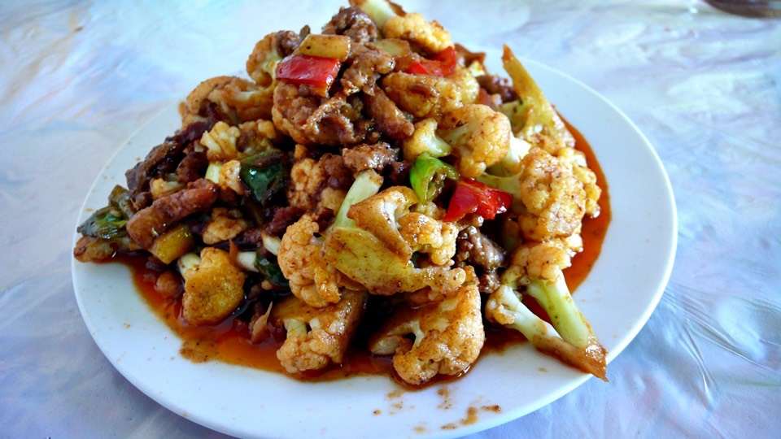
Rest for half an hour after meal is the golden rule to keep your stomach healthy.
Since it is still quite early, I sit at the door and trying to be a lucky charm for the restaurant. I dozed till noon under the shade.
Although my watch said it is noon, the sun is not directly above me. It was until 2 PM, the sun finally hangs straight above me
It is a bit boring on this road. The desert stays the same all the time, and so does the road.
One hour or two hours of riding dose not change the view a bit.
I walk Dido into the desert. The sand on the surface becomes chips on the ground, but crushes like potato chips when I step on it.
Beneath this thin layer of chip, sand occupied all the space.
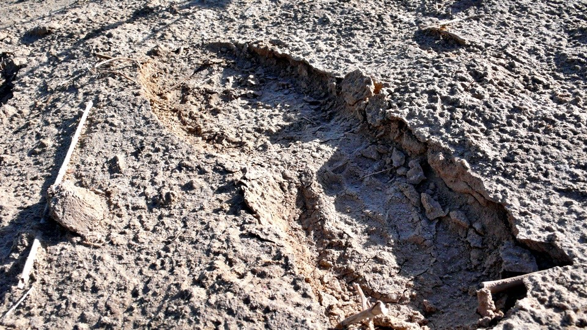
The endless electric pole lined up aside the road, at a distance of fifty-meter from the edge of road.
Just like the road, the line of electric pole extends to the horizon.
I find out that I am now in a small world that has mirrors in front and in back of me,
and the same view endlessly reflects and expends around me.
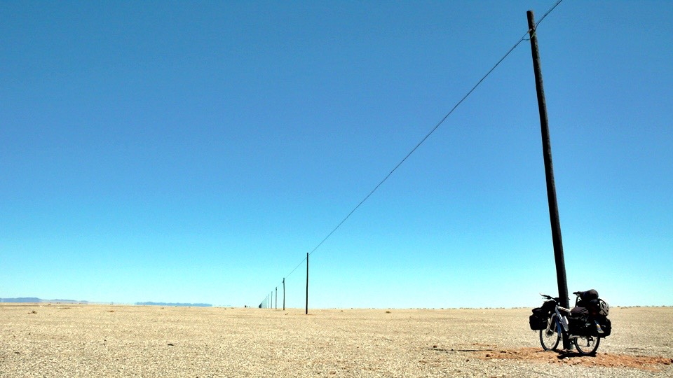
The mirage hangs there above the distant desert. It looks like a lake and has some reflection of trees in it.
However, it is a purely optical illusion. No matter how far you go you see only desert.
It is only the fate can bring me the surprise I have in the Shuangta Dan.

I have taken a lot of photo of the plants habitats the desert.
The water from the hotel is very hard, and you will find some white power stuff at the bottom of the water bottle.
This kept me from drinking the last sip of the water. Or I might end up with coughing and trying to get those powders out of my mouth.
So I just splash the last sip of water on these desert-proof plants.
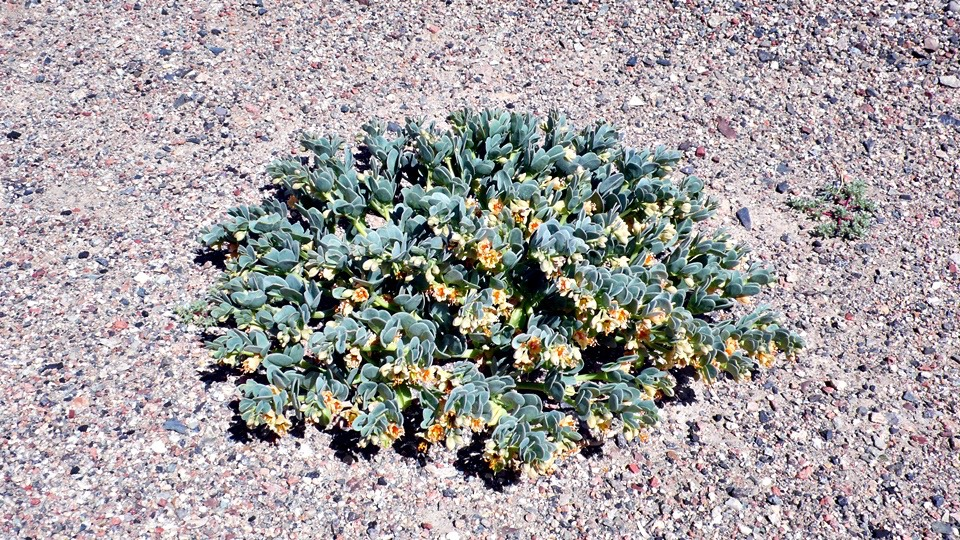
Finally I see some uphill slope on the later half of the road. I will climb from 1150 meter at Dunhuang to 1750 at Liuyuan.
This is not a challenge to me.
The wind also blows stronger in the after noon. Without trying to break the wind too much,
I slowly moved on the straight road, trying to preserve my energy.
There are fewer and fewer honks now, and I can hear more and more applauses.
I feel a little bit embarrassed by the applauses and deliver my appreciations in return with nodding.
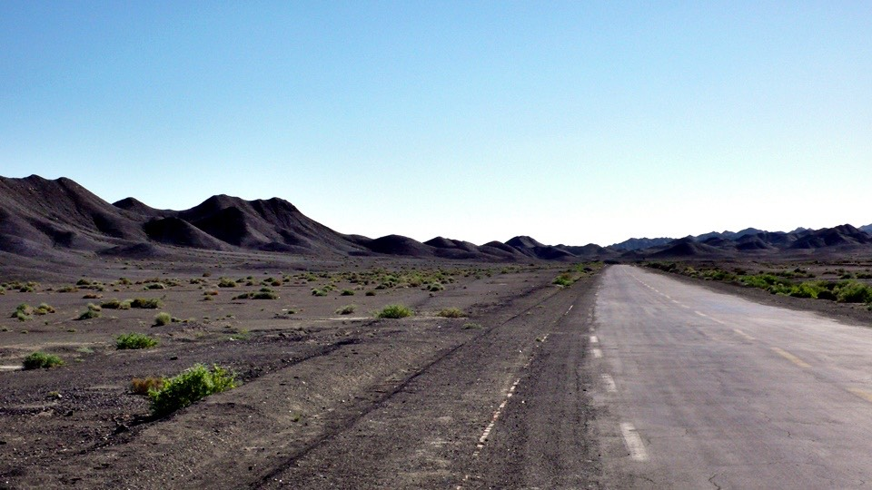
Maybe it is because of the slow speed. I don't feel tired at all when I arrived at Liuyuan at 7 PM.
Liuyuan is a mining city. I don’t know what they are mining, but there are a lot of miners here.
Both male and female, they all wear the big white masks and dirty clothes, working very hard at this place.
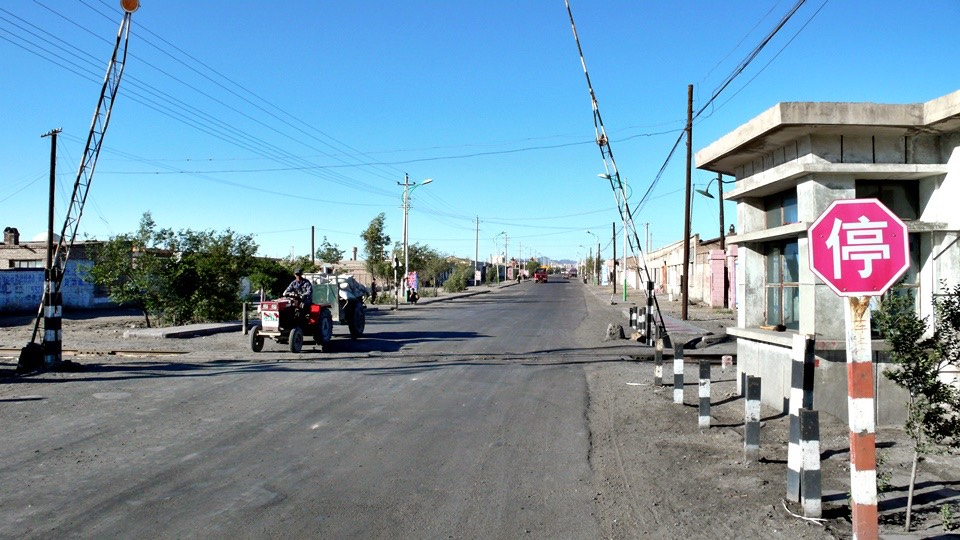
I found a cheap hotel that cost 10 bucks. It’s a room for four, but tonight I am the only occupant.
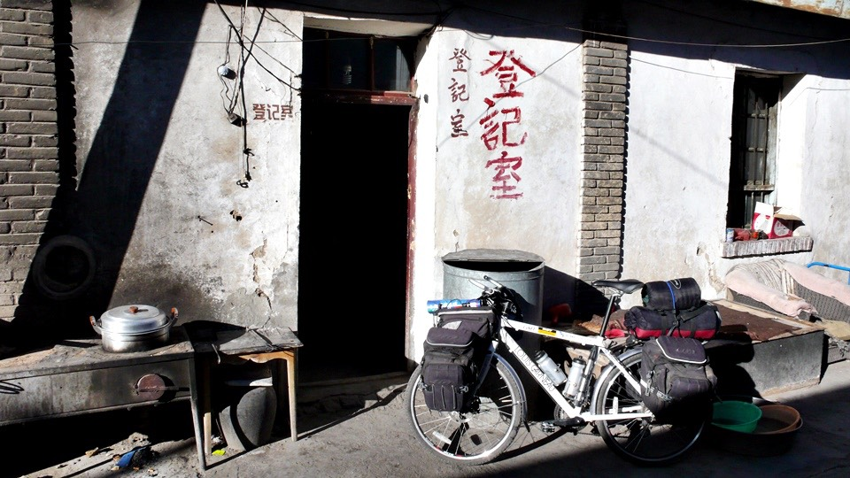
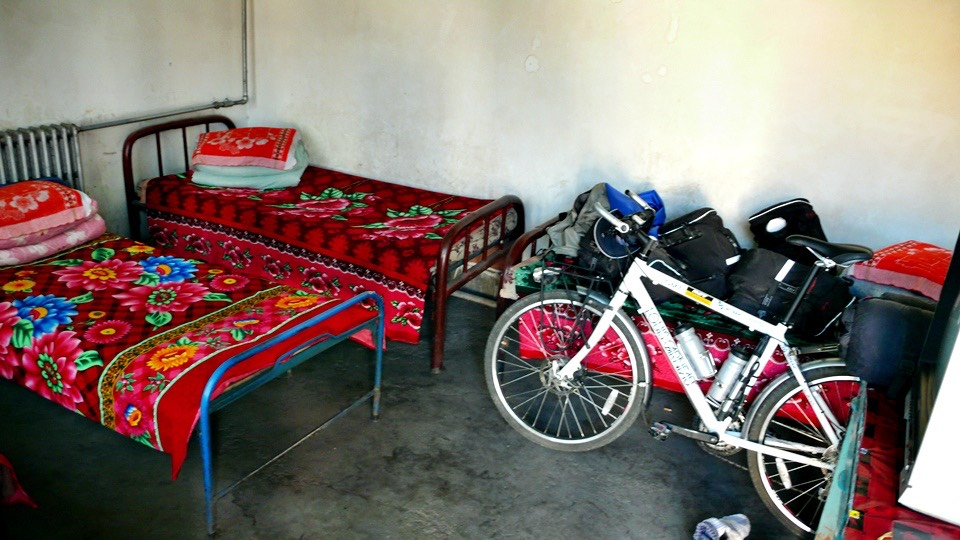
I washed my clothes first, and walk around this town with my beloved plastic slipper.
Luckily I found the market here, which resembles the local spirits most.
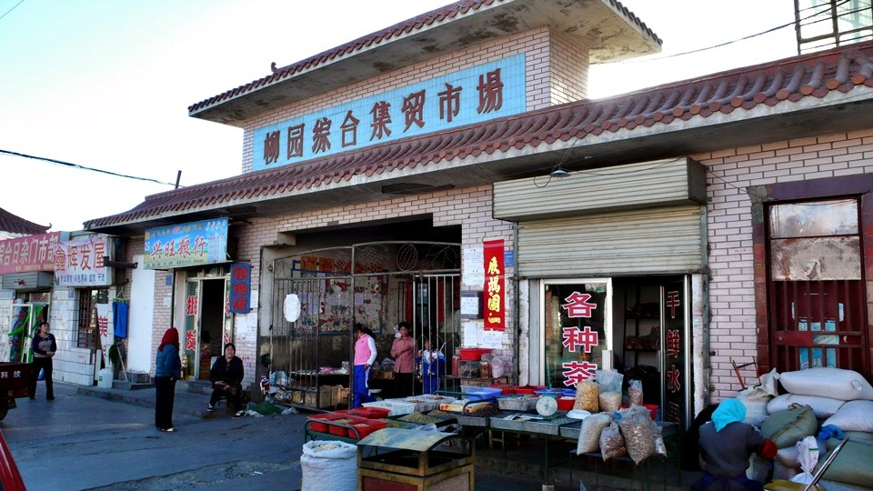
And I get the chance to buy a lot of affordable supplies here.
After shopping around, I decided to go with the fruits. It's been a while since I last have fruits.
Since I have not tried the oranges here, I bought one kilogram of orange.
7-8 oranges costs only 5 bucks, and I get the chance to supply some vitamin C
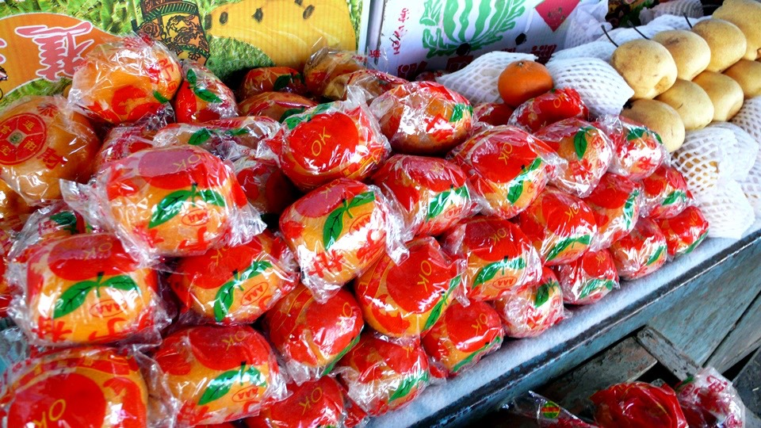
With a bag of orange in hand, I walked around looking for good restaurant.
The dinner today is the stewed mutton with brown sauce, which is the recommendation by the shop lady.
I originally ordered the boiled mutton since I have never taste of it.
However, the shop lady says that if I am into spicy food, the choice will be the stewed mutton with brown sauce.
This restaurant is one of it’s kind. They are awarded as the "model business of the year " and "model individual business" every year.
These flags are all over the wall.
The other customers saw me and asked me if I am the one who biked form Dunhuang on National highway 215 today.
Most of they pass me by on the road, and did not expect me to arrive at Liuyuan today.
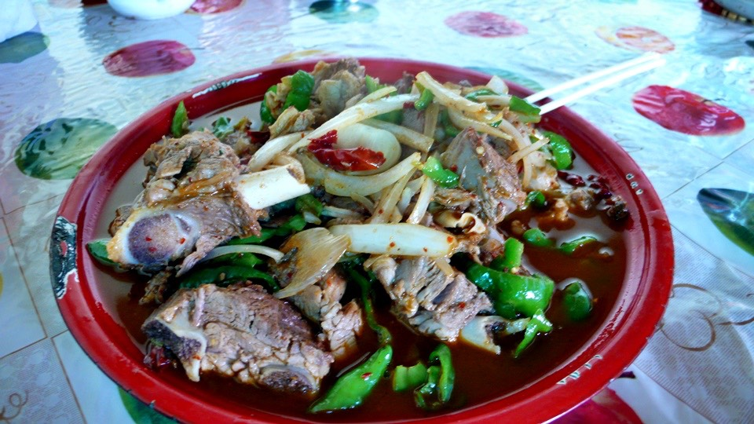
Compared to chicken, pork or beef, the texture of Mutton is very soft.
Just try not to think of the goats and you can enjoy Mutton without a problem.
The bread did not come with any flavor, but put some sauce on it makes it very delicious.
With some bread and the news on the television, the dinner time passed happily.
On my way back to hotel, I get some more milk, cracker and egg rolls.
There is still space in the backpack and I can still carry all of these.
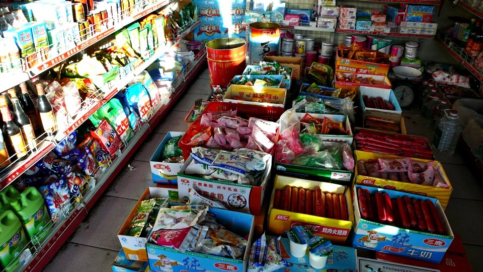
The oranges makes great after meal. With all the new supplies in the bag, I felt much safer.
Even if I got lost in the desert for three days, I will still have some food and only need to worry about water.